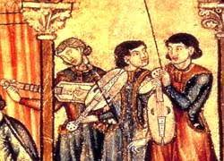
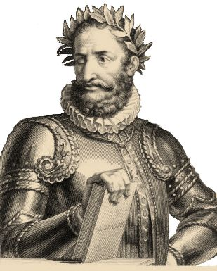

A literatura portuguesa abrange mais de oito séculos de produção, refletindo as transformações
históricas, sociais e culturais de Portugal ao longo do tempo. Desde suas primeiras manifestações na
Idade Média, até os movimentos modernos e contemporâneos, a literatura portuguesa apresenta uma rica
diversidade de gêneros, estilos e temas.
Dividida em três grandes eras medieval, clássica e moderna, cada uma dessas fases literárias traz
particularidades que marcaram sua época, influenciadas pelos contextos históricos e pelas correntes
culturais predominantes.
A literatura Portuguesa, é dividada em 3 tipos: a medieval, clássica e moderna. Ambas tem suas
próprias caracteristicas, jeito e o que escrever. Em todas, há uma certa ênfase em suas histórias, além
de mostrar como era a vida nessas épocas.
A era medieval da literatura portuguesa compreende o período do Trovadorismo ao Humanismo. No
Trovadorismo, a poesia era a principal forma de expressão literária, com as cantigas trovadorescas, que
podiam ser de amor (exaltando o sofrimento amoroso) ou de amigo (onde uma mulher lamentava a ausência do
amado), além das cantigas satíricas, como as de escárnio e maldizer. Além disso, havia a prosa medieval,
representada pelas novelas de cavalaria, que exaltavam o heroísmo dos cavaleiros, além do teatro
medieval, que apresentava peças de caráter religioso, como mistérios, milagres e moralidades.
Já o Humanismo, fase de transição entre a Idade Média e o Renascimento, introduziu uma visão mais
racional e antropocêntrica, com destaque para a poesia palaciana e as crônicas históricas de Fernão
Lopes, além das peças de Gil Vicente, que misturavam crítica social e religiosidade.

A era clássica da literatura portuguesa inicia-se com o Classicismo, fortemente influenciado pelo
Renascimento. A chegada de Sá de Miranda da Itália introduziu uma nova estética, com base nos ideais
clássicos de equilíbrio, harmonia e racionalidade. O principal nome dessa época é Luís de Camões, com
sua obra épica Os Lusíadas, que exalta os feitos dos navegadores portugueses e reforça o ideal heroico
do período. Após o Classicismo, a literatura barroca destacou-se pelo contraste, exagero e dualidade,
refletindo as tensões religiosas e políticas da época.
O Barroco foi marcado pelo uso de uma linguagem rebuscada e complexa, especialmente no cultismo e no
conceptismo. Padre Antônio Vieira foi o maior representante do Barroco português, famoso por seus
sermões que misturavam temas religiosos e políticos. O Arcadismo, também conhecido como Neoclassicismo,
surgiu como uma reação ao Barroco, buscando simplicidade e equilíbrio, com temas bucólicos e pastorais.
O poeta Bocage foi um dos grandes nomes dessa fase, escrevendo com uma linguagem mais leve e harmônica,
que refletia a idealização da vida no campo.

A era moderna da literatura portuguesa começa com o Romantismo, que valoriza o sentimento, o
individualismo e o nacionalismo. O Romantismo evolui para um estilo mais sentimental, o
ultrarromantismo, que acentua o exagero emocional e o sentimentalismo intensificado. Em meados do
século XIX, o Realismo surge como uma reação ao idealismo romântico, com obras que apresentam uma
visão crítica e objetiva da sociedade, apoiadas no cientificismo e na racionalidade. Eça de Queirós,
com romances como O Primo Basílio, é o grande nome do Realismo, enquanto Antero de Quental
representa o movimento na poesia. Posteriormente, o Simbolismo se contrapõe ao Realismo, propondo
uma literatura mais subjetiva e introspectiva, explorando o subconsciente e o misticismo.
O Modernismo traz uma ruptura com as tradições anteriores, introduzindo o verso livre e
experimentações formais, influenciado pelas vanguardas artísticas europeias. Este movimento valoriza
a inovação e a liberdade criativa, com autores como Fernando Pessoa, e evolui para o Presencismo,
focando em questões existenciais e de alienação social. A literatura contemporânea portuguesa
continua a evoluir, caracterizando-se pelo experimentalismo e pela busca de uma identidade que
equilibra a universalidade e a particularidade nacional.